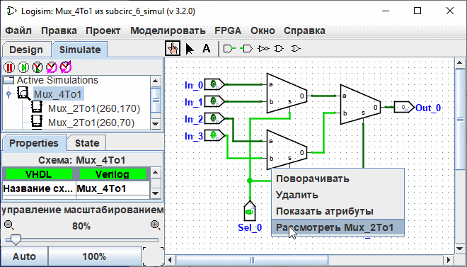

Отладка подсхем
При отладке крупных проектов могут возникать логические ошибки. Выявление причин некорректного поведения упрощается, если проанализировать внутреннее состояние подсхем непосредственно во время работы всего устройства. Для перехода в режим просмотра состояния конкретной подсхемы можно использовать три различных способа. Проще всего это сделать через дерево иерархии проекта, выбрав вкладку Моделирование в Навигаторе, либо выбрав пункт меню | Проект |→| Показать дерево моделирования |. Это переключит навигатор в режим отображения иерархии моделируемой схемы.

Двойной щелчок на элементе в этой иерархии откроет его внутреннее состояние.
Второй способ — вызвать контекстное меню для конкретной подсхемы на холсте (щёлкнув по ней правой кнопкой мыши) и выбрать пункт «Рассмотреть».

Третий способ — выбрать инструмент «Нажатие» и навести курсор на подсхему. В центре блока появится значок увеличительного стекла, двойной щелчок по которому откроет режим просмотра состояния этой подсхемы.

В любом случае, перейдя к просмотру состояния подсхемы, вы увидите, что значения сигналов на её контактах соответствуют значениям, передаваемым из родительской схемы.

Находясь в режиме просмотра состояния подсхемы, вы можете вносить изменения в схему. Если эти изменения затрагивают её выходные контакты, новые логические значения распространятся в родительскую схему. Однако значения на входных контактах подсхемы жестко задаются внешней схемой, поэтому изменять их вручную в этом режиме нельзя. При попытке изменить состояние входного контакта появится предупреждение: Значение на контакте привязано к состоянию родительской схемы. Создать новое состояние схемы?
При выборе ответа «Нет» действие будет отменено, а выбор «Да» создаст изолированную копию текущего состояния схемы (отсоединённую от родительского контекста), в которой вы сможете переключать значения входных контактов.
После завершения отладки вы можете вернуться к схеме верхнего уровня, дважды щёлкнув по ней в Навигаторе, либо выбрав в меню | Моделирование |→| Состояние уровнем выше |.
Далее: Библиотеки Logisim.